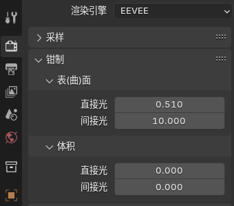
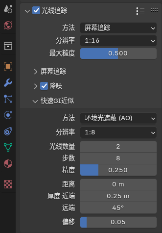

索引：
采样
钳制
光线追踪
标红参数影响性能开销
采样sampling

视图>采样：采样数越高，以性能为代价就会减少锯齿。
时序重投影：移动视图或者播放动画期间降低噪点。
抖动阴影：字面意思，在最终渲染总被开启，也会影响透明阴影投射的阴影。
阴影>光线数量：设置光(射)线的数量来追踪每盏灯光。可以减少随机阴影采样引起的噪点。(光线数量越多，灯光计算就越多( 影响性能))
阴影>步数:较高步数计算结果得到更柔和的阴影，但成本更高(影响性能)。
阴影>体积阴影:使物体更不容易透光。非常消耗资源(影响性能)，并有局限性。
步数：计算体积阴影的步数。
分辨率：阴影贴图的分辨率百分比。(设置更小分辨率应该可以提升视口性能)
高级>光照阈值：低值提升性能。用于计算切断灯光影响的距离。
钳制clamping

这些选项提供了一种方法来限制 高反射表面 和 密集体积的光斑和锯齿。
表面>直接光：限制一个表面能 反射 的最大光线强度(相当于直接反射强度的总控))
它减少锯齿噪点和光斑。
设置为0完全关闭钳制。较低的值 对生成的图像有更大的影响 比较高的值。
表面>间接光：限制了使用光线追踪和光照探头反射的最大光线强度(间接反射的总控)。
体积>直接光：与 表面直接光 相同，但针对体积直接照明。
体积>间接光：与 表面直接光 相同，但用于体积间接照明。
光线追踪raytracing

光线追踪流程的目标是：提高表面间接照明的精度。
关闭时，使用的预过滤光照探头提供了一种视觉上更稳定、更优化的替代方案，当视觉保真度不是主要目标时。
方法
：
▶ 光照探头：使用光照探头球形与平面来寻找场景交点。
当仿真度不是主要目标时，可用此方法，跟踪成本最低，但依赖于手动放置光照探头。
▶ 屏幕追踪(默认): 追踪与屏幕深度缓冲区相对的光线。如果光线离开视口，则回退到光照探头。
分辨率(默1:2)
：执行光线追踪的分辨率。较低的选项将更快，使用更少的内存，但会产生更模糊的结果。
最大糙度(默0.5)：BSDF可以使用光线追踪的最大粗糙度。粗糙度较高的BSDF将逐步使用快速GI近似。值为1将对每个曲面进行光线跟踪，并禁用快速GI。
总结：默认0.5时，表示使用一半的计算光线追踪与快速gi近似，越低的值使用更多快速gi近似模拟，越高的值使用计算光线跟踪，性能消耗就越大。
屏幕追踪：设置控制屏幕空间光线跟踪的行为。
▶ 精度(默0.25)：增加屏幕空间光线追踪的精度，但降低了最大跟踪距离。
增加精度同时也增加性能成本。
▶ 厚（宽）度(默0.2)：在追踪过程中纳入深度缓存器内计算的像素厚度。
较高的数值会将反射像素拉伸并增加闪烁。较低的数值可能会导致物体表面反射被裁剪或消失。
降噪：从原始光线追踪输出中减少噪点量。
空间重复：重复使用来自相邻像素的光线。可能会在表面上引入一些漏光。
时序累积:通过重新投影最后的光线追踪结果来累积样本。这会去除光斑，但也会引入颜色偏差。有助于视口时域稳定性和使渲染更快收敛。人话总结：使用这个渲染速度快，能去除光斑。
双边过滤：使用双边滤波器模糊已解析的光线跟踪输出。
快速GI近似：快速全局光照近似（Fast GI Approximation）是光线追踪流程的备用方案。生成的输出噪声更少，并且能够比单独追踪的光线更有效地捕捉反弹光照。目前被实现为屏幕空间效果，并将继承所有相关的限制。
方法：确定用于计算快速GI近似值的方法。
▶ 环境光遮蔽：使用场景交点以遮蔽来自光探头的远处光线。这是最快的选择。
▶ 全局照明(默认)：计算全局照明，考虑周围物体的反弹光线。(更智能同时计算量也更大)
分辨率：使用多少分辨率，来计算快速全局照明。
低值更快并使用更少内存，但将产生更模糊的结果。
光线数量：指定分辨率下每像素的GI光线的数量。 更高的值减少噪点。
步数：
每条GI光线的屏幕采样数量。 更高的值将减少噪点并提高质量。
步数越高，错过其他可能反射或阻挡光线的表面的机会就越小。这意味着 可以将“快速GI厚度”参数调整为较低的值，而不会损失太多的光反弹能量。
精度:更高的值会提高场景与GI光线相交的精度。提高精度也 会增加性能成本。
距离：如果非零，则其他 表(曲)面将有助于 快速GI近似 的最大距离是多少？
厚度 近端：计算快速GI和环境遮蔽时表(曲)面的几何厚度。减少漏光和接触遮挡缺失。有效性与距着色点的距离成比例降低，遵循平方反比定律。
远端：计算快速GI和环境遮蔽时表(曲)面的角厚度。 减少远处几何体的能量损失和遮挡缺失。较高的值会使非常薄的对象阻挡或反射过多的光线。
偏移：偏移着色法向以减少自相交伪影。
这个设置浮动菜单